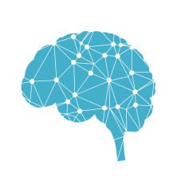

<!DOCTYPE html>
<html>
    <head>
        <title>Affective Posner Task</title>
     
        <!-- Scripts: -->
        <script src="jspsych-6.0.3/jspsych.js"></script>
        <script src="jspsych-6.0.3/plugins/jspsych-html-keyboard-response.js"></script>
        <script src="jspsych-6.0.3/plugins/jspsych-image-keyboard-response.js"></script>
        
        <!-- Style: -->
        <link href="jspsych-6.0.3/css/jspsych.css" rel="stylesheet" type="text/css"></link>

    </head>

    <body></body>

    <script>

        var timeline = [];

        var svg = {
            no_fill: '<div style="text-align:center;">' + 
                    '<svg width="700" height="180">' +
                    '<rect x="50" y="20" width="150" height="150" style="fill:black;stroke:black;stroke-width:20;fill-opacity:1;stroke-opacity:1" />' +
                    '<rect x="500" y="20" width="150" height="150" style=fill:black;stroke:black;stroke-width:20;fill-opacity:1;stroke-opacity:1" />' + 
                    '</div>',

            left_prompt: '<div style="text-align:center;">' + 
                    '<svg width="700" height="180">' +
                    '<rect x="50" y="20" width="150" height="150" style="fill:blue;stroke:black;stroke-width:20;fill-opacity:1;stroke-opacity:1" />' +
                    '<rect x="500" y="20" width="150" height="150" style=fill:black;stroke:black;stroke-width:20;fill-opacity:1;stroke-opacity:1" />' + 
                    '</div>',

            right_prompt: '<div style="text-align:center;">' + 
                    '<svg width="700" height="180">' +
                    '<rect x="50" y="20" width="150" height="150" style="fill:black;stroke:black;stroke-width:20;fill-opacity:1;stroke-opacity:1" />' +
                    '<rect x="500" y="20" width="150" height="150" style=fill:blue;stroke:black;stroke-width:20;fill-opacity:1;stroke-opacity:1" />' + 
                    '</div>',

            left_stimuli: '<div style="text-align:center;">' + 
                    '<svg width="700" height="180">' +
                    '<rect x="50" y="20" width="150" height="150" style="fill:white;stroke:black;stroke-width:20;fill-opacity:1;stroke-opacity:1" />' +
                    '<rect x="500" y="20" width="150" height="150" style=fill:black;stroke:black;stroke-width:20;fill-opacity:1;stroke-opacity:1" />' + 
                    '</div>',

            right_stimuli: '<div style="text-align:center;">' + 
                    '<svg width="700" height="180">' +
                    '<rect x="50" y="20" width="150" height="150" style="fill:black;stroke:black;stroke-width:20;fill-opacity:1;stroke-opacity:1" />' +
                    '<rect x="500" y="20" width="150" height="150" style=fill:white;stroke:black;stroke-width:20;fill-opacity:1;stroke-opacity:1" />' + 
                    '</div>',
        };

        // Welcome trial ------------------------------------------
        // Type is the plugin to run the trial. Each plugin defines a set of parameters needed to run a trial w/ that plugin. 
        var welcome = {
         type: 'html-keyboard-response',
         stimulus: '<div align = "center">' + '</img> <br>' +
                    'This is a <b>Proof of Concept</b> experiment using the <b>Affective Posner Task.</b>' + 
                    '<p><font size = 15>Press any key to begin.<p></font>' +
                    '</div>'
        };
        timeline.push(welcome);

        // Instructions trial -------------------------------------
        var instructions_1 = {
            type: 'html-keyboard-response',
            stimulus: "<p>In this experiment, a fixation cross will be followed by a set of two boxes: </p>" +
                svg.no_fill +
                "<p>There will be a queue with either box filled with <font color = 'blue'><b>blue</b></font>.</p>" +
                svg.left_prompt + 
                "<p>There is <b><u>no need</b></u> to give a response if a box is filled with blue.</p>"
        }

        var instructions_2 = {
            type: 'html-keyboard-response',
            stimulus: "A response <b><u>is needed</b></u> when the target appears as a <b>white</b> box.</b><p>" +
                svg.left_stimuli +
                "<p class='small'><strong>If the target is in the left box, press the M key.</strong></p>" +
                svg.right_stimuli +
                "<p class='small'><strong>If the target is in the right box, press the N key.</strong></p>"
        }

        var instructions_3 = {
            type: 'html-keyboard-response',
            stimulus: "<font size = 20><p>Ready?<p>" + "<p><b>Press any key to begin.</b></p></font>"
        }

        var instructions = {
            timeline: [instructions_1, instructions_2, instructions_3]
        }

        timeline.push(instructions);

        // Test trials ---------------------------------------------

        var affective_posner_procedure = {
            timeline: [
                // Fixation:
                {
                    type: 'html-keyboard-response',
                    stimulus: '<font size="20">+</font>',
                    choices: jsPsych.NO_KEYS, //No responses will be accepted as a valid response.
                    trial_duration: 1500
                },

                // Initial: 
                {
                    type: 'html-keyboard-response',
                    stimulus: svg.no_fill,
                    choices: jsPsych.NO_KEYS,
                    trial_duration: 500
                },

                // Queue:
                {
                    type: 'html-keyboard-response',
                    stimulus: jsPsych.timelineVariable('queue'),
                    choices: jsPsych.NO_KEYS,
                    trial_duration: 500
                },

                // Stimuli:
                {
                    type: 'html-keyboard-response',
                    stimulus: jsPsych.timelineVariable('stimuli'),
                    choices: ['n', 'm'],
                    //trial_duration: 700,
                    data: jsPsych.timelineVariable('data'),
                    on_finish: function(data){
                                console.log(data);
                                console.log("key press:" + data.key_press);
                                console.log("correct response:" + jsPsych.pluginAPI.convertKeyCharacterToKeyCode(data.correct_response));
                                data.correct = (data.key_press == jsPsych.pluginAPI.convertKeyCharacterToKeyCode(data.correct_response));
                    } 
                }
            ],
            timeline_variables: [
                    // Congruent trials
                    { stimuli: svg.left_stimuli, queue: svg.left_prompt, 
                        data: {test_part: 'trial', correct_response: 'n', test_type: 'congruent', direction: 'left' }},

                    { stimuli: svg.right_stimuli, queue: svg.right_prompt, 
                        data: {test_part: 'trial', correct_response: 'm', test_type: 'congruent', direction: 'right' }},

                    // Incongruent trials
                    { stimuli: svg.left_stimuli, queue: svg.right_prompt, 
                        data: {test_part: 'trial', correct_response: 'n', test_type: 'incongruent', direction: 'left' }},

                    { stimuli: svg.right_stimuli, queue: svg.left_prompt, 
                        data: {test_part: 'trial', correct_response: 'm', test_type: 'incongruent', direction: 'right' }}
            ],
            sample: {
                type: 'fixed-repetitions',
                size: 1, // Order is randomized, repeat whole set once (so 4 events in total)
            }
        }

        timeline.push(affective_posner_procedure);

         // Debriefing -----------------------------------------------
         var debrief_block = {
            type: "html-keyboard-response",
            stimulus: function(){
                var trials = jsPsych.data.get().filter({test_part: 'trial'});
                var correct_trials = trials.filter({correct: true});
                var accuracy = Math.round(correct_trials.count() / trials.count() * 100);
                var rt = Math.round(correct_trials.select('rt').mean());

                var trials_congruent = trials.filter({test_type: 'congruent'});
                var correct_trials_congruent = trials_congruent.filter({correct: true});
                var accuracy_congruent = Math.round(correct_trials_congruent.count() / trials_congruent.count() * 100);
                var rt_congruent = Math.round(correct_trials_congruent.select('rt').mean());

                var trials_incongruent = trials.filter({test_type: 'incongruent'});
                var correct_trials_incongruent = trials_incongruent.filter({correct: true});
                var accuracy_incongruent = Math.round(correct_trials_incongruent.count() / trials_incongruent.count() * 100);
                var rt_incongruent = Math.round(correct_trials_incongruent.select('rt').mean());

                return "<p><font size = 20><b>Results:</b></font></p>" +
                "<p>You responded <font color = 'green'>correctly</font> on "+accuracy+"% of the trials.</p>"+
                "<p>Your average response time was "+rt+"ms.</p>"+
                "<p>For <b>congruent trials</b>, you had an accuracy of "+accuracy_congruent+"% and rt of "+rt_congruent+"ms.<p>" +
                "<p>For <b>incongruent trials</b>, you had an accuracy of "+accuracy_incongruent+"% and rt of "+rt_incongruent+"ms.<p>" +
                "<p>Press any key to complete the experiment. Thank you!</p>";
            }
         };

         timeline.push(debrief_block);

        // Start experiment -----------------------------------------
        jsPsych.init({
            timeline: timeline,
            on_finish: function(){ //displays the data for each trial - good for debugging
                jsPsych.data.displayData();
            }
        });

    </script>
</html>
